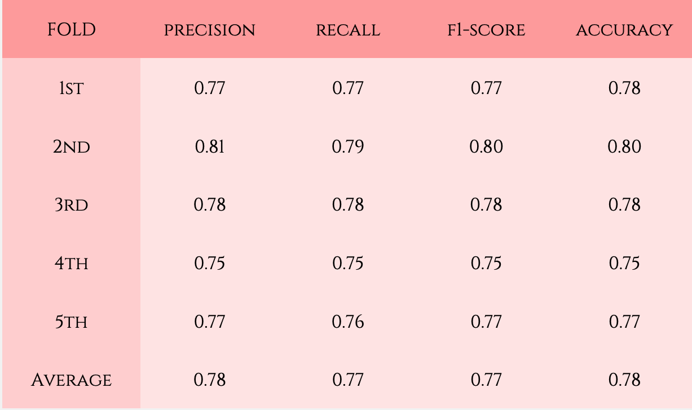

Automated CVD Detection Using Deep Learning Segmentation of PLAX view Echocardiography & Multi-variable LSTM Analysis
Overview
This project focused on developing an AI-assisted diagnostic tool for cardiovascular disease (CVD) using echocardiographic imaging. By utilising deep learning techniques, the tool segmented the heart's left ventricle from PLAX (Parasternal Long Axis) view echocardiography videos and analysed the motion and structural features using multivariable LSTM-based time-series classification. The objective was to improve the accuracy and efficiency of automated cardiac diagnostics, especially in clinical environments with limited expert availability.
The approach combined medical image segmentation and temporal analysis of heart function to generate a predictive model for CVD classification, contributing to the broader aim of accessible and scalable cardiac screening.
Methodologies
- DeepLabv3 were employed to accurately segment the left ventricle region from PLAX echocardiography frames.
- Motion-based cardiac features were extracted post-segmentation. These features were passed through deep learning model (i.e. LSTM) to detect abnormal cardiac patterns.
- A curated and preprocessed dataset of echocardiogram videos was used. Missing frames were interpolated to ensure consistent feature mapping.
- Performance was measured using metrics such as accuracy, precision, recall, and F1-score for classification.
Tools Used
Results
Using 5-fold cross-validation, the model demonstrated strong performance in detecting Aortic Stenosis (AS), achieving an average precision, recall, F1-score, and accuracy of approximately 0.80. For Left Ventricular Hypertrophy (LVH) classification, performance was slightly lower, with both precision and accuracy averaging around 0.78.
These results highlight the model’s effectiveness in identifying major cardiovascular abnormalities from echocardiographic motion features.
AS vs Control
LVH VS Control
Limitations
- No detailed quantitative analysis (e.g., Dice score, IoU) was conducted to evaluate segmentation performance.
- The LSTM classifier was only designed for binary classification (CVD vs. non-CVD). It does not distinguish between specific types or severities of cardiovascular conditions, which could limit its clinical utility in nuanced diagnoses.
- Certain advanced analyses such as SHAP (SHapley Additive exPlanations) for model interpretability were not performed. This reduced the project's ability to explore explainability aspects in depth.
Future Directions
- Multimodal Integration: Combine echocardiography with ECG, blood biomarkers, or clinical metadata to enhance prediction accuracy.
- Explainable AI (XAI): Integrate model explainability techniques such as Grad-CAM or SHAP to increase clinical trust.
- Deployment: Develop a web-based interface or lightweight mobile application to deploy the tool for real-world clinical screening.
- Real-time Processing: Optimize the model for real-time video processing and integration into point-of-care ultrasound systems.